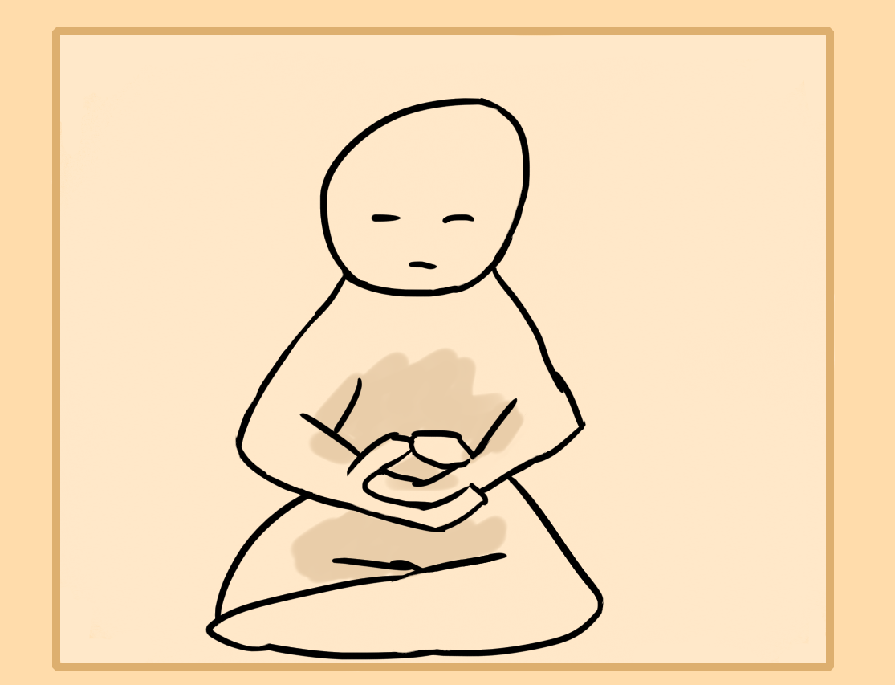
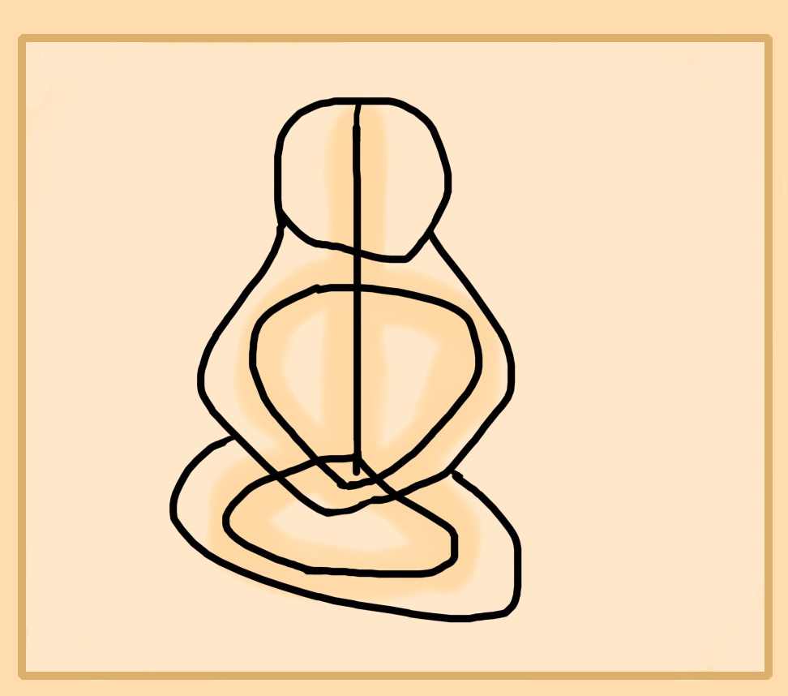
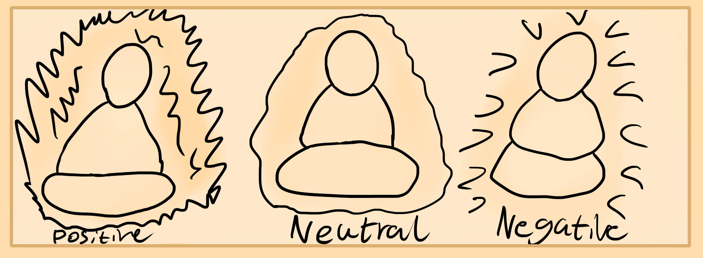
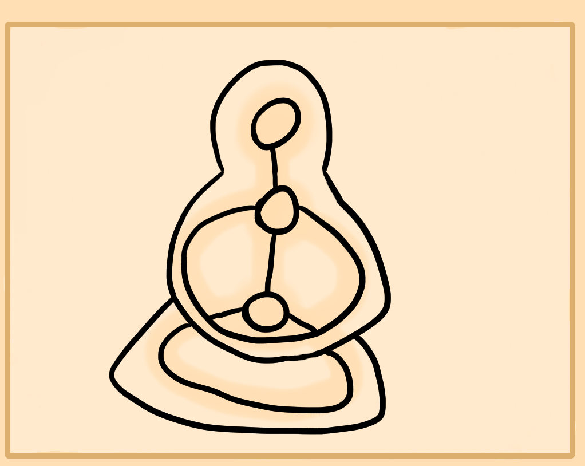

Now that you've learned some basic theory and meditation, it's time to practice propper basic energy cultivation.
Do remember to practice void meditation if you're tired or burned out from energy cultivation. This way you wont hurt yourself from excessive practice.
Naval Meditation
Energy meditation is a little different than regular so there are some extra steps involved. Some of these are optional.
First is to choose which leg to put infront of the other if you are sitting on the ground. I find that left forward and right backwards as shown in the picture above is yin and will calm you/bring energy inwards while the opposite is more yang and will exert it outwards. Similarly you may want to pick a hand position. I like dhyana mudra which is shown above. I think left hand on top of right hand is yin while the opposite is yang. Pick whichever feels best for you or whatever element you want to work on.
Next is to place the whole tongue on top of the roof of the mouth. You can do this easily by pushing up the mid back area up onto the roof of the mouth. Doing this draws the energy from your limbs and external areas into the internal. It's used for more internal energy meditations. All of these things will be used during most internal energy meditations. For external ones, the tongue can be relaxed instead.(Postnote - Closing the jaw blocks your root and tongue on the roof will block the sacral. Not always recommended.)
Now to start the naval meditation. Do this by assuming your meditation posture. Then, focus within the naval region. Use the previous center chart as a reference for the location. Start by breathing into this area. Feel as if there's a ball of energy here. Create it with your sense of feeling. Eventually once you feel some sensations, just hold your focus in the belly region, don't overly tense or relax it.
Keep your focus here for 5-10 minutes.
This is a basic center meditation and can be done in the other major or minor energy centers to stimulate them.
Channel Meditation
Begin by sitting and perform the previous naval meditation if you feel like you need more energy before starting.
Otherwise feel out the central channel by expressing out your sense of feeling from the anus to the top of your head. Trace internally along your body from bottom to top or top to bottom to "light up" the entire body with awareness. The idea is to be able to hold a light focus without straining within the whole central channel of the body. It will become easier as you stimulate it more and the channel becomes more unblocked.
Once you're able to hold your focus from the root to crown, start to expand it outwards through the arms and legs until you reach the tips of your fingers. Hold this focus making sure to feel all of your limbs, mentally trace back up the arm or leg if needed.
Continue this meditation for 5-10 minutes.
Three Mode Aura Meditation
Now that you've learned both basic center and channel meditation, it is time to learn aura meditation. The aura is your cloud of energy within and outside the body. You have a moisture aura, a temperature aura, a thought aura, energy aura, smell aura and some others. We're just working on the energy aura which is controlled by awareness and feeling.
Neutral Aura
First we'll work on the neutral aura. Begin by sitting and preparing yourself to meditate with void meditation. Once ready, focus on your whole body lightly so that your focus emanates out of the body slightly. This feels like shrouding yourself with awareness.
Another way is to feel your body and then to lightly press outwards. This may allow you to feel outside and grasp your more external aura. Don't worry if you can't, just work on what you can feel. Anyway, hold the feeling of your bodies energetic space and the aura around it. Continue this for 5-10 minutes.
Positive Aura
This meditation is to exert a force and push more of the spiritual presence in your body outside. Begin by meditating and performing the previous neutral aura meditation. When you've got a good feeling and grasp of your aura, push outwards, slowly and lightly. Feel how the energetic presence which is your energy body is pushing out. Push out with more force to test your limits.
This develops a more yang, external aura.
Three Center Meditation
Begin by entering meditation. Start focusing around your lower belly area, inside where the bladder meets the guts.
Start to pull energy into this area if need be or simply just rest your focus here. Eventually pressure and warmth will build up. Channel this pressure down your legs and feel the sensations. This is an observation exercise to see how the natural flow of energy in your body runs.
Next once the legs are full of energy draw your focus upwards to the heart region and fill it like the first center. Channel it through the shoulders and arms. Fill them. Finally raise it up to the head and fill your head center.
Your whole body should be full of energy.
Negative Aura
This one is a little more tricky. It requires you to form a neutral aura and then use that aura to create a pulling force so that the aura draws from the atmosphere into it.
Start by sitting and doing the neutral aura meditation. Once you have a firm feeling of your aura, feel the aura and pull in with it, though not drawing it back into the body. You still want to have your aura around and within your body, just that it's drawing atmosphere from around it.
This develops the ability to draw in energy to recharge. Don't use it around others or you may drain their energy.